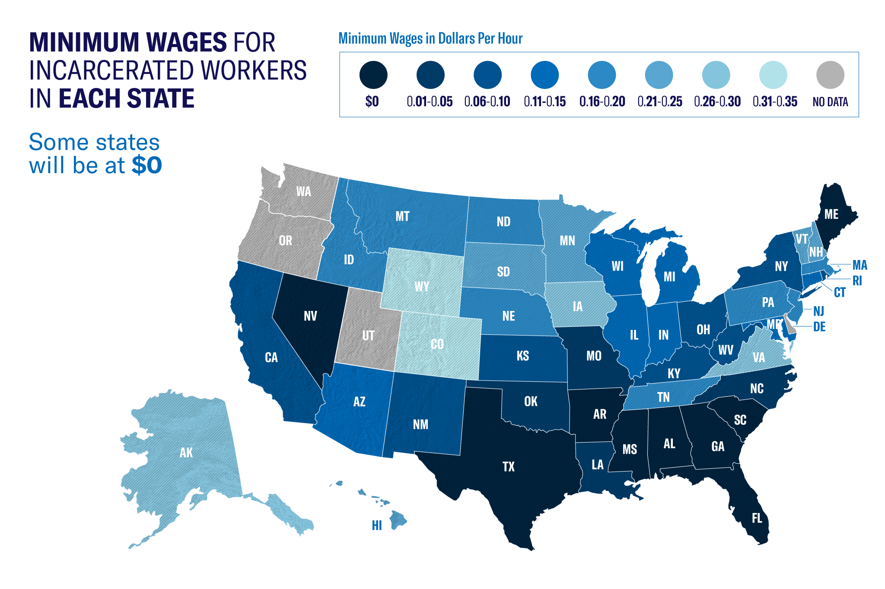

The Thirteenth Amendment of the American Constitution |
||
| Home | Sources | Quiz |
IntroductionThe Thirteenth Amendment to the United States Constitution brought America into the modern age of human and civil rights. It was ratified on December 6, 1865. The legislation abolished slavery and involuntary servitude, except as punishment for a crime. Some still argue about the ethics of allowing this to continue as a punishment for a crime, as it could incentivize the state to imprison people to obtain what could be called 'slaves'. In spite of ethical concerns regarding its exception for punishment, the amendment was undoubtedly a step in the right direction. |
||
HistoryIn 1863 President Lincoln issued the "Emancipation Proclamation" (known as "Proclamation 95" and was an executive order), which declared “all persons held as slaves within any State, or designated part of a State, the people whereof shall then be in rebellion against the United States, shall be then, thenceforward, and forever free.” This proclamation was far from ending slavery in the United States, as it did not apply to many parts of the country. However, this did set up the thirteenth amendment to succeed in the future with the help of President Lincoln. The 13th Amendment was passed at the end of the Civil War, but before the Southern states had been restored to the Union. The Senate passed the amendment in April 1864, but the House initially did not. In response, Lincoln took an active role in seeing it to fruition. He had the passage of the 13th Amendment added to the Republican platform for the upcoming Presidential election (1864). His efforts were successful when the House passed the bill in January 1865 with a vote of 119–56. The amendment was finally ratified in December of that year. |
||
Text of the Amendment
Impact and SignificanceThe 13th Amendment was the final constitutional solution to the issue of slavery. It was also the first of the "trio of Civil War amendments" that greatly expanded the civil rights of Americans. The 14th and 15th amendments basically provided slaves and anyone else born on American soil rights, including the right to vote. It wasn't until the 19th amendment that women were allowed to vote, but these helped to make great steps toward it. The exception clause of the Thirteenth Amendment, which allows forced labor as punishment, is considered completely immoral by many. The ACLU (American Civil Liberties Union) published a study that detailed the poor working conditions of prison workers and the lack of skill development within the jobs they did. The poor working conditions included disproportionate preventable injuries, low or no pay (35 cents on the high end), and being forced to work or threat of additional punishment. |
||
|
In addition to abolishing slavery, the Thirteenth Amendment also restricted several other forms of bound labor and servitude. Indentured servitude, a holdover from the colonial era, and peonage, which grew more prominent in the postwar South, were also considered illegal by the new amendment. Bailey v. Alabama (1911) made peonage officially unconstitutional, while slavery and indentured servitude were both considered as such upon the ratification of the amendment. The enforcement clause in Section Two of the amendment has been used to fight "racial discrimination in the private sector, public transportation, housing, and more recently in human trafficking." These fights happened through the 20th and early 21st centuries. |
 | |
ConclusionThe Thirteenth Amendment, ratified in 1865, marked a significant legal milestone by abolishing slavery and involuntary servitude, except as a form of punishment for a crime. Its adoption into the U.S. Constitution directly addressed the institution of slavery, effectively ending it nationwide and setting up future civil rights advancements. The amendment has two sections, with the first explicitly prohibits slavery and involuntary servitude, and the second granting Congress the authority to enforce this prohibition through legislation. This legal framework has been invaluable in fighting discrimination and servitude beyond its original context. Even recently, the enforcement clause of the Thirteenth Amendment has been invoked in cases to challenge racial discrimination in sectors such as housing, employment, and human trafficking. Despite its positive impact, the amendment's penal labor exception has remained problematic, raising questions about the ethical implications of forced labor within the penal system. The Thirteenth Amendment's ongoing significance is due to its historical role in ending slavery and its continued relevance in the ongoing fight for civil rights and justice. |
||